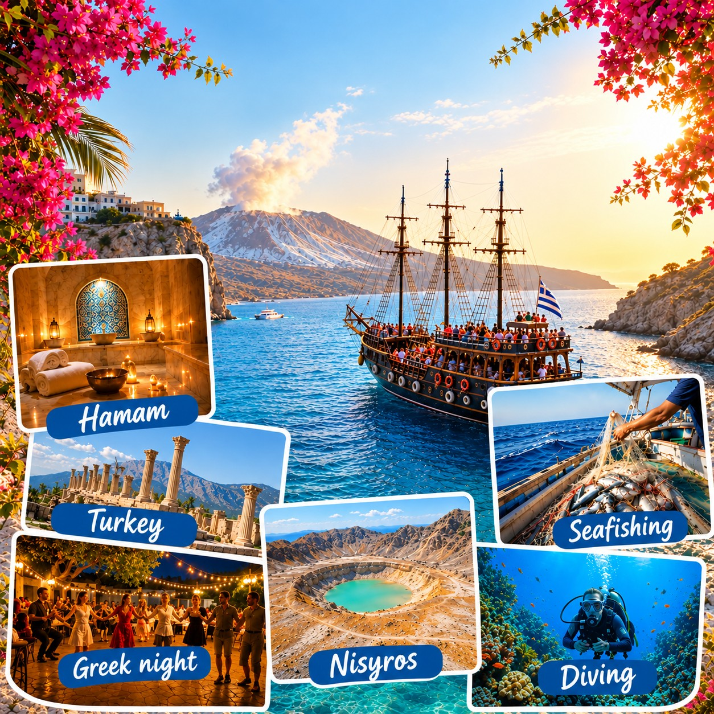

Meenemen
De gids zei: drank is vaak voor eigen rekening, neem zonnebrand mee, en eigen drinken mee aan boord mag soms niet. Welke boot vaart, wisselt.

Boottocht die vaak Pserimos, Kalymnos en Plati aandoet. Pserimos is klein en rustig. Kalymnos staat bekend om de sponzenvisserij. Bij Plati is het water helder om te zwemmen.
De gids zei: drank is vaak voor eigen rekening, neem zonnebrand mee, en eigen drinken mee aan boord mag soms niet. Welke boot vaart, wisselt.